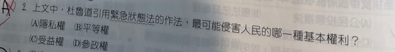
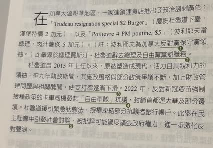

分享原卷｜第2題
完整原題
作答所需文章／材料
【加拿大杜魯道下臺】 在加拿大溫哥華地區，一家連鎖速食店推出了政治諷刺廣告：「Trudeau resignation special $2 Burger」（慶祝杜魯道下臺，漢堡特價2加元），以及「Poilievre 4 PM poutine, $5」（波利耶夫當總理，肉汁薯條5加元）。（註：波利耶夫為加拿大反對黨保守黨領袖。）此舉源於總理賈斯汀・杜魯道辭去總理及自由黨黨魁職務。 杜魯道自2015年上任以來，原被塑造成現代、活力且具親和力的領袖，但九年執政期間，其施政風格與部分政策爭議不斷，加上財政管理問題與相關醜聞，使支持率逐漸下滑。2022年，反對新冠疫苗強制接種政策的卡車司機發起「自由車隊」抗議，封鎖首都渥太華及部分邊境。杜魯道援引緊急狀態法，授權凍結部分抗議者銀行帳戶。此舉在民主社會中引發社會討論，被批評可能過度擴張政府權力，進一步激化反對聲浪。上文中，杜魯道引用緊急狀態法的作法，最可能侵害人民的哪一種基本權利？
(A) 隱私權
(B) 平等權
(C) 受益權
(D) 參政權
先想一想，再查看答案、解說與原圖
原卷作答：A（原卷紅筆改C）
本題預期：(C) 受益權。
逐項解析
| 選項與原句 | 判讀 | 句意與判斷理由 |
|---|---|---|
| (A) 隱私權 | 不選 | 材料不是以窺探或公開個人資料為核心限制。 |
| (B) 平等權 | 不選 | 題目重點不是比較不同群體是否獲平等待遇。 |
| (C) 受益權 | 應選 | 凍結帳戶限制財產使用，依本題教材分類屬經濟上受益權。 |
| (D) 參政權 | 不選 | 抗議背景不會把動用銀行存款的權利改成選舉等參政權。 |
詳細說明與解題步驟
題目所指的具體作法是凍結銀行帳戶，使當事人不能自由動用及支配其中的金錢，最直接涉及財產權。依本題國中公民的分類，財產權列在經濟上的受益權，因此選C。
隱私權重點是個人私密資料不被任意探查或公開；平等權重點是不受無合理理由的差別待遇；參政權則涉及選舉等政治參與。本題應由「凍結帳戶」這個具體限制判斷，而不是只因背景有抗議活動就選參政權。
核對註記：依完整原卷文章／表格與四選項核對；依本題國中教材作權利分類，法律名稱與法規位階另查官方條文；保留原文時事數字與時點，不代換成最新新聞。
原圖（僅本題）

